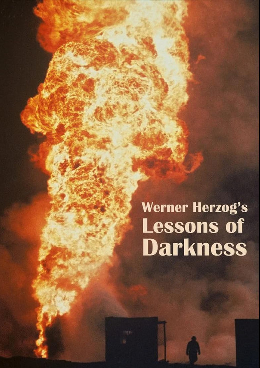

Werner Herzog
1992
54 minutes
TITLE: Lessons of Darkness TEXT PLACEHOLDER 063
This is a Werner Herzog "documentary" about the oil field fires in Kuwait in the aftermath of the Gulf War. You're going to see a lot of footage of extremely intense fires. Make sure to wear headphones and crank the sound up. This film sounds like Hell, and somehow you're going to find this sound very ambient and relaxing, like watching an environmentally devastating yule log burning on a loop on the Christmas Channel during the holiday season.
You have a sudden urge to pour yourself a glass of eggnog.
You get up to indulge this urge, though it is highly unlikely that you have any left over from the holidays, which were months ago, and you didn't even get around to buying any eggnog or celebrating Christmas at all this year, sadly enough.
However, you do discover that you have a seemingly endless quart of vanilla ice cream in your freezer. You don't have much of a sweet tooth, so stuff like that tends to last forever since you never process it as food when you open the refrigerator door and ponder the contents.
You put the ice cream into a bowl. It's not warm enough outside to appreciate ice cream right now and what you really wanted was a beverage. So you put the scooped ice cream bowl into the microwave and zap it for about 45 seconds until it is just starting to melt. You stir it with a spoon and taste it, then decide to add a dash of artificial vanilla seasoning to boot. Another taste and you decide that what you really want is some slightly boozy eggnog. You don't have any bourbon, so you opt for stirring in a few splashes of brandy.
You take your place back in front of the screen to watch the fire, spooning boozy sips of semi-melted ice cream into your mouth and pretending it's Christmas. Better late than never.
Happy holidays, however you choose to celebrate!
Time to choose something different: